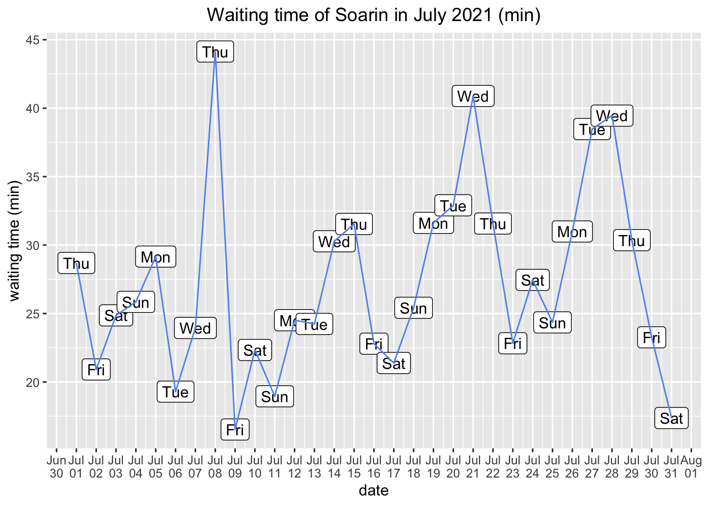
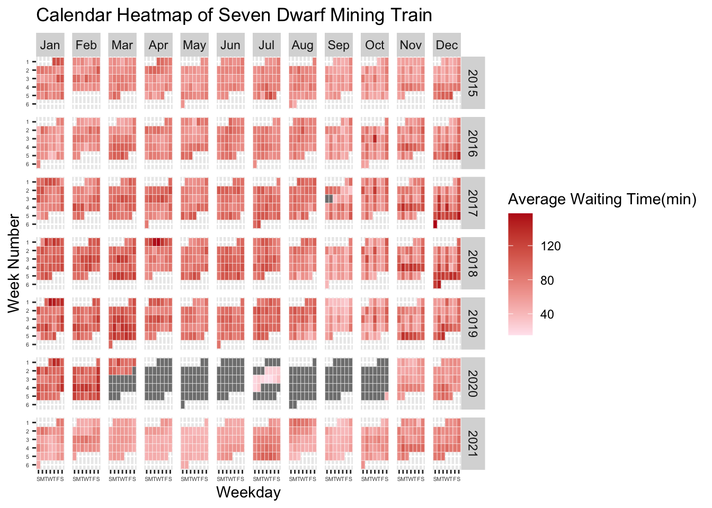

Chapter 5 Results
5.1 Waiting time analysis
In order to have a general idea of the waiting time for different attractions along the year, I choose to map the data of year 2019, since in this way there is no time gaps in the plots.
Among different attractions, Avatar was the most popular attractions in 2019, which required the longest waiting time for about 100 min-175 min. Its waiting time was significantly longer than the others. Spaceship, pirate and dinosaur are the three attractions with the least waiting time for about 20 min-40 min.
Besides, there exists an interesting trend that the waiting time for each attraction seems to decrease gradually from January to September and then increase from September to December. The only exception is the attraction Splash, which has an opposing pattern. The peak waiting time for Splash is around August. It is reasonable since Splash is having a ride over water, therefore people would like to play it more in summer rather than in winter.
It is a good choice to visit Disney in September which yields the shortest waiting time in most attractions over the year.
To map the relationship between the waiting time and weekday, I make the chart above using the waiting time of attraction Soarin in July 2021.
The plot shows that the waiting time has a pattern of having longer waiting time in weekdays and shorter waiting time on weekends which is oppose to the common sense. The waiting time reaches its peak on 8th, 21st, 27th, 28th July which are mainly Tuesday-Thursday and reaches its minimum mainly on Friday, Saturday and Sunday. My assumption for this pattern is Disney tends to close some of the attractions for some time in weekdays but fully open on weekends.
5.2 Ticket price
 There were 3 ticket price types, peak,regular and value, and in a particular day there was only one ticket type.
Among all days, regular tickets account for the most proportion, which means people are most likely to get a regular price ticket. From Tuesday to Friday, the proportion of ticket price were similar, besides regular ticket, the proportion of value price ticket is more than peak price ticket. In Saturday, Sunday and Monday, the ticket is more likely to assigned as peak price than the other days and a value price ticket is harder to get.
5.3 Waiting-duration ratio
 We pay special attention on the line of waiting time/duration ratio = 1, which means one can enjoy the event with the same waiting time. The waiting time in more than half of the events in Cleveland Disney were less than playing time. However in the popular events, the waiting time were significantly at least 3 times more than playing time. The first 3 popular events, the waiting time were even 9 times more than playing times.
5.4 Events in Disney
Comparing between different parks, Epcot holds the most events than the other parks. Epcot International Flower & Garden Festival (epfg) and Epcot International Food & Wine Festival (epfw) are the top 2 events that holds the most in Disney. They are both from Epcot and holds at least two times than other events.
Magic Kindom is the park that provide the most various type of events. It provides Disney Early Morning Magic(emm), Mickey’s Not-So-Scary Halloween Party(mnsshp), Mickey’s Very Merry Christmas Party(mvmcp), Disney After Hours(dah), etc. If we would like to join various events, we may pay more attention to Magic Kindom’s schedule and Magic Kindom can be a better choice.
Besides, Animal Kingdom is the park that holds the least events. Therefore, as toursist, we may expect fewer events hold in Animal Kingdom then others when visiting Disney.
#Interactive
Click this link to try: https://vizhub.com/evadai55/cc4cacf3bbdf431f9d25d60b61da410d?edit=files&file=index.html&mode=full